Code
pacman::p_load(tidyverse, stringr, sf, janitor, here, sfdep, spdep, ggspatial, gganimate, gifski, patchwork, Kendall, dbscan, scales)Armed conflict in Myanmar: January 2021 to September 2025
Burma gained independence from the United Kingdom in 1948. Its early parliamentary era was short-lived: a military caretaker government took over in 1958 and General Ne Win seized power in 1962, beginning decades of military rule. Its civil conflict existed right from the start in 1948 and has continued ever since. The Communist Party of Burma (Burma being the country’s former name) fought the government from 1948 to 1989, when it collapsed from internal strife. Ethnic minority groups have also been fighting for autonomy or independence from the central government, such as the Kachin Independence Army which was formed in 1961. The All Burma Students’ Democratic Front was founded in 1988, after the military coup of September 1988, when armed forces crushed a nationwide pro-democracy uprising and forced thousands of students to flee to countries along its borders. The military junta changed the country’s English name to Myanmar on 18 June 1989, and it was renamed the Republic of the Union of Myanmar in 2010, with a civilian government taking office in 2011.
The 1 February 2021 military coup when the military seized power was a watershed moment in Myanmar’s history of conflict and ended the decade of civilian government from 2011 to 2021. Demonstrations erupted across the country and violence against citizens increased sharply. The National Unity Government formed the People’s Defence Force in May 2021 and, in September 2021, declared a “people’s defensive war” against the military regime, calling citizens to arms.
The period for our geospatial analysis is from January 2021 (one month before the 2021 military coup) to September 2025, covering the conflict evolution from protest to multi-fronted armed conflict.
The following geospatial and aspatal datasets are used:
Armed Conflict Location & Event Data Project (ACLED) data of Myanmar from 1st January 2021 to 30th September 2025.
Myanmar Township Boundaries MIMU v9.4.
The analysis is conducted at township level, the third-level administrative division unit for Myanmar.
There are a total of 330 townships in scope.
The following analysis seeks to address the following questions:
The following R packages will be used:
The following settings ensure reproducible results (set.seed()) and avoids scientific notation in the output (scipen).
The geospatial file contains both English and Burmese text. The encoding is set as UTF-8 when importing so that the Burmese text can be read correctly.
options: ENCODING=UTF-8
Reading layer `mmr_polbnda_adm3_250k_mimu_1' from data source
`C:\Users\chert\Desktop\cherteosg\ISSS626-GSA\Take-Home_Ex2\data\geospatial'
using driver `ESRI Shapefile'
Simple feature collection with 330 features and 8 fields
Geometry type: MULTIPOLYGON
Dimension: XY
Bounding box: xmin: 92.1721 ymin: 9.605884 xmax: 101.17 ymax: 28.54554
Geodetic CRS: WGS 84Perform data sanity check. There should be 330 rows, each for a township in Myanmar.Check the coordinate reference system (CRS).
Rows: 330
Columns: 9
$ ST <chr> "Ayeyarwady", "Ayeyarwady", "Ayeyarwady", "Ayeyarwady", "Ayey…
$ ST_PCODE <chr> "MMR017", "MMR017", "MMR017", "MMR017", "MMR017", "MMR017", "…
$ DT <chr> "Hinthada", "Hinthada", "Hinthada", "Hinthada", "Hinthada", "…
$ DT_PCODE <chr> "MMR017D002", "MMR017D002", "MMR017D002", "MMR017D002", "MMR0…
$ TS <chr> "Hinthada", "Ingapu", "Kyangin", "Lemyethna", "Myanaung", "Za…
$ TS_PCODE <chr> "MMR017008", "MMR017013", "MMR017012", "MMR017010", "MMR01701…
$ TS_MMR <chr> "ဟင်္သာတ", "အင်္ဂပူ", "ကြံခင်း", "လေးမျက်နှာ", "မြန်အောင်", "ဇလွန်", "လပွတ္တာ", "…
$ PCode_V <dbl> 9.4, 9.4, 9.4, 9.4, 9.4, 9.4, 9.4, 9.4, 9.4, 9.4, 9.4, 9.4, 9…
$ geometry <MULTIPOLYGON [°]> MULTIPOLYGON (((95.21313 17..., MULTIPOLYGON (((…[1] "WGS 84"Set a reusable style for plotting maps for consistency.
A table is created for the three administrative levels. As townships may have common names, the P-code is used as the unique identifier.
The MIMU file carries both English and Burmese names. Only the English names and the P-codes are kept, so that names display correctly in maps and tables and can be matched to ACLED.
state_region district township
1 Ayeyarwady Hinthada Hinthada
2 Ayeyarwady Hinthada Ingapu
3 Ayeyarwady Hinthada Kyangin
4 Ayeyarwady Hinthada Lemyethna
5 Ayeyarwady Hinthada Myanaung
6 Ayeyarwady Hinthada Zalun
7 Ayeyarwady Labutta Labutta
8 Ayeyarwady Labutta Mawlamyinegyun
9 Ayeyarwady Maubin Danubyu
10 Ayeyarwady Maubin Maubin
11 Ayeyarwady Maubin Nyaungdon
12 Ayeyarwady Maubin Pantanaw
13 Ayeyarwady Myaungmya Einme
14 Ayeyarwady Myaungmya Myaungmya
15 Ayeyarwady Myaungmya Wakema
16 Ayeyarwady Pathein Kangyidaunt
17 Ayeyarwady Pathein Kyaunggon
18 Ayeyarwady Pathein Kyonpyaw
19 Ayeyarwady Pathein Ngapudaw
20 Ayeyarwady Pathein Pathein
21 Ayeyarwady Pathein Thabaung
22 Ayeyarwady Pathein Yegyi
23 Ayeyarwady Pyapon Bogale
24 Ayeyarwady Pyapon Dedaye
25 Ayeyarwady Pyapon Kyaiklat
26 Ayeyarwady Pyapon Pyapon
27 Bago (East) Bago Bago
28 Bago (East) Bago Daik-U
29 Bago (East) Bago Kawa
30 Bago (East) Bago Kyauktaga
31 Bago (East) Bago Nyaunglebin
32 Bago (East) Bago Shwegyin
33 Bago (East) Bago Thanatpin
34 Bago (East) Bago Waw
35 Bago (East) Taungoo Htantabin
36 Bago (East) Taungoo Kyaukkyi
37 Bago (East) Taungoo Oktwin
38 Bago (East) Taungoo Phyu
39 Bago (East) Taungoo Taungoo
40 Bago (East) Taungoo Yedashe
41 Bago (West) Pyay Padaung
42 Bago (West) Pyay Paukkhaung
43 Bago (West) Pyay Paungde
44 Bago (West) Pyay Pyay
45 Bago (West) Pyay Shwedaung
46 Bago (West) Pyay Thegon
47 Bago (West) Thayarwady Gyobingauk
48 Bago (West) Thayarwady Letpadan
49 Bago (West) Thayarwady Minhla
50 Bago (West) Thayarwady Monyo
51 Bago (West) Thayarwady Nattalin
52 Bago (West) Thayarwady Okpho
53 Bago (West) Thayarwady Thayarwady
54 Bago (West) Thayarwady Zigon
55 Chin Falam Falam
56 Chin Falam Tedim
57 Chin Falam Tonzang
58 Chin Hakha Hakha
59 Chin Hakha Thantlang
60 Chin Matupi Matupi
61 Chin Matupi Paletwa
62 Chin Mindat Kanpetlet
63 Chin Mindat Mindat
64 Kachin Bhamo Bhamo
65 Kachin Bhamo Mansi
66 Kachin Bhamo Momauk
67 Kachin Bhamo Shwegu
68 Kachin Mohnyin Hpakant
69 Kachin Mohnyin Mogaung
70 Kachin Mohnyin Mohnyin
71 Kachin Myitkyina Chipwi
72 Kachin Myitkyina Injangyang
73 Kachin Myitkyina Myitkyina
74 Kachin Myitkyina Tanai
75 Kachin Myitkyina Tsawlaw
76 Kachin Myitkyina Waingmaw
77 Kachin Puta-O Khaunglanhpu
78 Kachin Puta-O Machanbaw
79 Kachin Puta-O Nawngmun
80 Kachin Puta-O Puta-O
81 Kachin Puta-O Sumprabum
82 Kayah Bawlake Bawlake
83 Kayah Bawlake Hpasawng
84 Kayah Bawlake Mese
85 Kayah Loikaw Demoso
86 Kayah Loikaw Hpruso
87 Kayah Loikaw Loikaw
88 Kayah Loikaw Shadaw
89 Kayin Hpa-An Hlaingbwe
90 Kayin Hpa-An Hpa-An
91 Kayin Hpa-An Thandaunggyi
92 Kayin Hpapun Hpapun
93 Kayin Kawkareik Kawkareik
94 Kayin Kawkareik Kyainseikgyi
95 Kayin Myawaddy Myawaddy
96 Magway Gangaw Gangaw
97 Magway Gangaw Saw
98 Magway Gangaw Tilin
99 Magway Magway Chauk
100 Magway Magway Magway
101 Magway Magway Myothit
102 Magway Magway Natmauk
103 Magway Magway Taungdwingyi
104 Magway Magway Yenangyaung
105 Magway Minbu Minbu
106 Magway Minbu Ngape
107 Magway Minbu Pwintbyu
108 Magway Minbu Salin
109 Magway Minbu Sidoktaya
110 Magway Pakokku Myaing
111 Magway Pakokku Pakokku
112 Magway Pakokku Pauk
113 Magway Pakokku Seikphyu
114 Magway Pakokku Yesagyo
115 Magway Thayet Aunglan
116 Magway Thayet Kamma
117 Magway Thayet Mindon
118 Magway Thayet Minhla
119 Magway Thayet Sinbaungwe
120 Magway Thayet Thayet
121 Mandalay Kyaukse Kyaukse
122 Mandalay Kyaukse Myittha
123 Mandalay Kyaukse Sintgaing
124 Mandalay Kyaukse Tada-U
125 Mandalay Mandalay Amarapura
126 Mandalay Mandalay Aungmyaythazan
127 Mandalay Mandalay Chanayethazan
128 Mandalay Mandalay Chanmyathazi
129 Mandalay Mandalay Mahaaungmyay
130 Mandalay Mandalay Patheingyi
131 Mandalay Mandalay Pyigyitagon
132 Mandalay Meiktila Mahlaing
133 Mandalay Meiktila Meiktila
134 Mandalay Meiktila Thazi
135 Mandalay Meiktila Wundwin
136 Mandalay Myingyan Myingyan
137 Mandalay Myingyan Natogyi
138 Mandalay Myingyan Ngazun
139 Mandalay Myingyan Taungtha
140 Mandalay Nyaung-U Kyaukpadaung
141 Mandalay Nyaung-U Nyaung-U
142 Mandalay Pyinoolwin Madaya
143 Mandalay Pyinoolwin Mogoke
144 Mandalay Pyinoolwin Pyinoolwin
145 Mandalay Pyinoolwin Singu
146 Mandalay Pyinoolwin Thabeikkyin
147 Mandalay Yamethin Pyawbwe
148 Mandalay Yamethin Yamethin
149 Mon Mawlamyine Chaungzon
150 Mon Mawlamyine Kyaikmaraw
151 Mon Mawlamyine Mawlamyine
152 Mon Mawlamyine Mudon
153 Mon Mawlamyine Thanbyuzayat
154 Mon Mawlamyine Ye
155 Mon Thaton Bilin
156 Mon Thaton Kyaikto
157 Mon Thaton Paung
158 Mon Thaton Thaton
159 Nay Pyi Taw Det Khi Na Det Khi Na Thi Ri
160 Nay Pyi Taw Det Khi Na Lewe
161 Nay Pyi Taw Det Khi Na Pyinmana
162 Nay Pyi Taw Det Khi Na Za Bu Thi Ri
163 Nay Pyi Taw Oke Ta Ra Oke Ta Ra Thi Ri
164 Nay Pyi Taw Oke Ta Ra Poke Ba Thi Ri
165 Nay Pyi Taw Oke Ta Ra Tatkon
166 Nay Pyi Taw Oke Ta Ra Zay Yar Thi Ri
167 Rakhine Kyaukpyu Ann
168 Rakhine Kyaukpyu Kyaukpyu
169 Rakhine Kyaukpyu Munaung
170 Rakhine Kyaukpyu Ramree
171 Rakhine Maungdaw Buthidaung
172 Rakhine Maungdaw Maungdaw
173 Rakhine Mrauk-U Kyauktaw
174 Rakhine Mrauk-U Minbya
175 Rakhine Mrauk-U Mrauk-U
176 Rakhine Mrauk-U Myebon
177 Rakhine Sittwe Pauktaw
178 Rakhine Sittwe Ponnagyun
179 Rakhine Sittwe Rathedaung
180 Rakhine Sittwe Sittwe
181 Rakhine Thandwe Gwa
182 Rakhine Thandwe Thandwe
183 Rakhine Thandwe Toungup
184 Sagaing Hkamti Hkamti
185 Sagaing Hkamti Homalin
186 Sagaing Kale Kale
187 Sagaing Kale Kalewa
188 Sagaing Kale Mingin
189 Sagaing Kanbalu Kanbalu
190 Sagaing Kanbalu Kyunhla
191 Sagaing Katha Banmauk
192 Sagaing Katha Indaw
193 Sagaing Katha Katha
194 Sagaing Katha Tigyaing
195 Sagaing Kawlin Kawlin
196 Sagaing Kawlin Pinlebu
197 Sagaing Kawlin Wuntho
198 Sagaing Mawlaik Mawlaik
199 Sagaing Mawlaik Paungbyin
200 Sagaing Monywa Ayadaw
201 Sagaing Monywa Budalin
202 Sagaing Monywa Chaung-U
203 Sagaing Monywa Monywa
204 Sagaing Naga Self-Administered Zone Lahe
205 Sagaing Naga Self-Administered Zone Layshi
206 Sagaing Naga Self-Administered Zone Nanyun
207 Sagaing Sagaing Myaung
208 Sagaing Sagaing Myinmu
209 Sagaing Sagaing Sagaing
210 Sagaing Shwebo Khin-U
211 Sagaing Shwebo Shwebo
212 Sagaing Shwebo Tabayin
213 Sagaing Shwebo Taze
214 Sagaing Shwebo Wetlet
215 Sagaing Shwebo Ye-U
216 Sagaing Tamu Tamu
217 Sagaing Yinmarbin Kani
218 Sagaing Yinmarbin Pale
219 Sagaing Yinmarbin Salingyi
220 Sagaing Yinmarbin Yinmarbin
221 Shan (East) Kengtung Kengtung
222 Shan (East) Kengtung Mongkhet
223 Shan (East) Kengtung Mongla
224 Shan (East) Kengtung Mongping
225 Shan (East) Kengtung Mongyang
226 Shan (East) Monghsat Monghsat
227 Shan (East) Monghsat Mongton
228 Shan (East) Tachileik Monghpyak
229 Shan (East) Tachileik Mongyawng
230 Shan (East) Tachileik Tachileik
231 Shan (North) Hopang Hopang
232 Shan (North) Hopang Mongmao
233 Shan (North) Hopang Pangwaun
234 Shan (North) Kokang Self-Administered Zone Konkyan
235 Shan (North) Kokang Self-Administered Zone Laukkaing
236 Shan (North) Kyaukme Hsipaw
237 Shan (North) Kyaukme Kyaukme
238 Shan (North) Kyaukme Namtu
239 Shan (North) Kyaukme Nawnghkio
240 Shan (North) Lashio Hseni
241 Shan (North) Lashio Kunlong
242 Shan (North) Lashio Lashio
243 Shan (North) Lashio Mongyai
244 Shan (North) Lashio Tangyan
245 Shan (North) Matman Matman
246 Shan (North) Matman Narphan
247 Shan (North) Matman Pangsang (Panghkam)
248 Shan (North) Mongmit Mabein
249 Shan (North) Mongmit Mongmit
250 Shan (North) Muse Kutkai
251 Shan (North) Muse Muse
252 Shan (North) Muse Namhkan
253 Shan (North) Pa Laung Self-Administered Zone Manton
254 Shan (North) Pa Laung Self-Administered Zone Namhsan
255 Shan (South) Danu Self-Administered Zone Pindaya
256 Shan (South) Danu Self-Administered Zone Ywangan
257 Shan (South) Langkho Langkho
258 Shan (South) Langkho Mawkmai
259 Shan (South) Langkho Mongnai
260 Shan (South) Langkho Mongpan
261 Shan (South) Loilen Kunhing
262 Shan (South) Loilen Kyethi
263 Shan (South) Loilen Laihka
264 Shan (South) Loilen Loilen
265 Shan (South) Loilen Monghsu
266 Shan (South) Loilen Mongkaing
267 Shan (South) Loilen Nansang
268 Shan (South) Pa-O Self-Administered Zone Hopong
269 Shan (South) Pa-O Self-Administered Zone Hsihseng
270 Shan (South) Pa-O Self-Administered Zone Pinlaung
271 Shan (South) Taunggyi Kalaw
272 Shan (South) Taunggyi Lawksawk
273 Shan (South) Taunggyi Nyaungshwe
274 Shan (South) Taunggyi Pekon
275 Shan (South) Taunggyi Taunggyi
276 Tanintharyi Dawei Dawei
277 Tanintharyi Dawei Launglon
278 Tanintharyi Dawei Thayetchaung
279 Tanintharyi Dawei Yebyu
280 Tanintharyi Kawthoung Bokpyin
281 Tanintharyi Kawthoung Kawthoung
282 Tanintharyi Myeik Kyunsu
283 Tanintharyi Myeik Myeik
284 Tanintharyi Myeik Palaw
285 Tanintharyi Myeik Tanintharyi
286 Yangon Yangon (East) Botahtaung
287 Yangon Yangon (East) Dagon Myothit (East)
288 Yangon Yangon (East) Dagon Myothit (North)
289 Yangon Yangon (East) Dagon Myothit (Seikkan)
290 Yangon Yangon (East) Dagon Myothit (South)
291 Yangon Yangon (East) Dawbon
292 Yangon Yangon (East) Mingalartaungnyunt
293 Yangon Yangon (East) North Okkalapa
294 Yangon Yangon (East) Pazundaung
295 Yangon Yangon (East) South Okkalapa
296 Yangon Yangon (East) Tamwe
297 Yangon Yangon (East) Thaketa
298 Yangon Yangon (East) Thingangyun
299 Yangon Yangon (East) Yankin
300 Yangon Yangon (North) Hlaingtharya (East)
301 Yangon Yangon (North) Hlaingtharya (West)
302 Yangon Yangon (North) Hlegu
303 Yangon Yangon (North) Hmawbi
304 Yangon Yangon (North) Htantabin
305 Yangon Yangon (North) Insein
306 Yangon Yangon (North) Mingaladon
307 Yangon Yangon (North) Shwepyithar
308 Yangon Yangon (North) Taikkyi
309 Yangon Yangon (South) Cocokyun
310 Yangon Yangon (South) Dala
311 Yangon Yangon (South) Kawhmu
312 Yangon Yangon (South) Kayan
313 Yangon Yangon (South) Kungyangon
314 Yangon Yangon (South) Kyauktan
315 Yangon Yangon (South) Seikgyikanaungto
316 Yangon Yangon (South) Thanlyin
317 Yangon Yangon (South) Thongwa
318 Yangon Yangon (South) Twantay
319 Yangon Yangon (West) Ahlone
320 Yangon Yangon (West) Bahan
321 Yangon Yangon (West) Dagon
322 Yangon Yangon (West) Hlaing
323 Yangon Yangon (West) Kamaryut
324 Yangon Yangon (West) Kyauktada
325 Yangon Yangon (West) Kyeemyindaing
326 Yangon Yangon (West) Lanmadaw
327 Yangon Yangon (West) Latha
328 Yangon Yangon (West) Mayangone
329 Yangon Yangon (West) Pabedan
330 Yangon Yangon (West) SanchaungSanity check for duplicated township names.
township n
1 Htantabin 2
2 Minhla 2Check that the p-codes are distinct for duplicates identified.
township ts_pcode district state_region
1 Htantabin MMR007014 Taungoo Bago (East)
2 Htantabin MMR013006 Yangon (North) Yangon
3 Minhla MMR008009 Thayarwady Bago (West)
4 Minhla MMR009013 Thayet MagwayThis shows how many districts and townships are in each state / region.
# A tibble: 19 × 3
state_region districts townships
<chr> <int> <int>
1 Yangon 4 45
2 Sagaing 12 37
3 Mandalay 7 28
4 Ayeyarwady 6 26
5 Magway 5 25
6 Shan (North) 8 24
7 Shan (South) 5 21
8 Kachin 4 18
9 Rakhine 5 17
10 Bago (East) 2 14
11 Bago (West) 2 14
12 Mon 2 10
13 Shan (East) 3 10
14 Tanintharyi 3 10
15 Chin 4 9
16 Nay Pyi Taw 2 8
17 Kayah 2 7
18 Kayin 4 7
19 TOTAL 80 330The below shows the boundary map study area at state/region, districts and townships level (source:Myanmar Township Boundaries MIMU v9.4).
Myanmar consists of 7 states (primarily ethnic minorities) and 7 regions (primarily Bamar ethnicity) as well as an a Union Territory (‘Nay Pyi Taw’). Bago is split into East and West and Shan is split into North, South, East in the ACLED data used.
lvl <- function(data, id, lab, title) {
g <- data %>% group_by({{ id }}, {{ lab }}) %>% summarise(.groups = "drop")
ggplot(g) +
geom_sf(aes(fill = {{ id }}), colour = "white", linewidth = .15, show.legend = FALSE) +
scale_fill_viridis_d(option = "turbo") +
labs(title = title) + theme_map()
}
map1 <- lvl(mym, st_pcode, state_region, "State / Region") +
geom_sf_text(aes(label = state_region), size = 2, check_overlap = TRUE)
map2 <- lvl(mym, dt_pcode, district, "District")
map3 <- lvl(mym, ts_pcode, township, "Township")
map1 + map2 + map3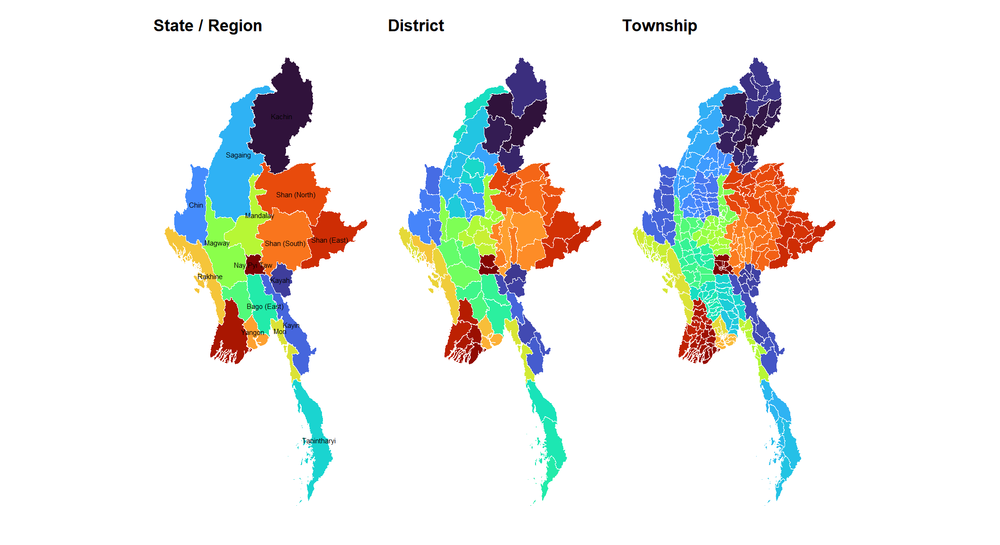
Note: Some ACLED events are located offshore in the Andaman Sea and Bay of Bengal. Events that fall more than 1 km outside the township boundaries are excluded from the township-level analysis and are not shown on this map. The number of excluded events is reported in the spatial join section below.
Myanmar stretches across 2 zones, 46N (western part) and 47N (eastern part). EPSG:32646 (WGS 84 / UTM 46N) will be used for this study. Township layer is transformed from degrees to meters.
xmin ymin xmax ymax
414059.6 1065802.4 1347748.3 3166186.5 ggplot(mym_tfm) +
geom_sf(aes(fill = state_region), colour = "white", linewidth = .1) +
scale_fill_viridis_d(option = "turbo", name = NULL) +
annotation_scale(location = "bl") +
annotation_north_arrow(location = "tr", style = north_arrow_minimal) +
theme_map() + theme(legend.key.size = unit(.35, "cm"))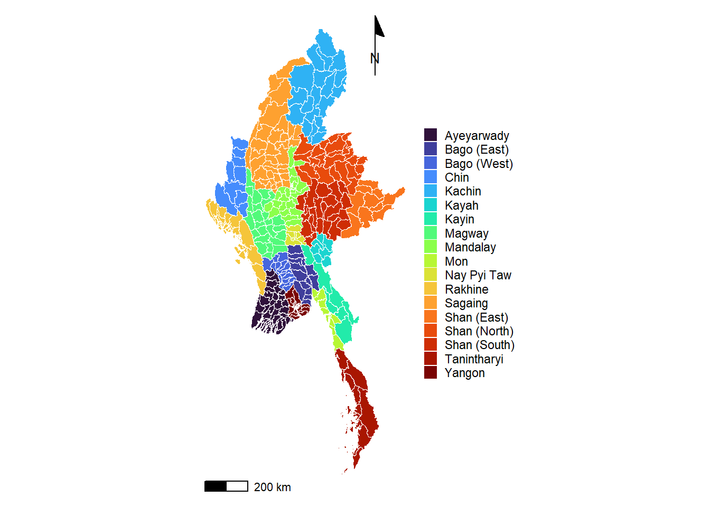
The map shows the study area, Myanmar, divided into 18 states and regions (Shan and Bago are each split into sub-regions) and 330 townships. Township size varies widely.
Rows: 87,109
Columns: 31
$ event_id_cnty <chr> "MMR10920", "MMR10906", "MMR10932", "MMR10933", "MM…
$ event_date <date> 2021-01-01, 2021-01-01, 2021-01-01, 2021-01-01, 20…
$ year <dbl> 2021, 2021, 2021, 2021, 2021, 2021, 2021, 2021, 202…
$ time_precision <dbl> 1, 1, 1, 1, 1, 1, 1, 1, 1, 1, 1, 1, 1, 1, 1, 1, 1, …
$ disorder_type <chr> "Political violence", "Political violence", "Politi…
$ event_type <chr> "Violence against civilians", "Battles", "Battles",…
$ sub_event_type <chr> "Attack", "Armed clash", "Armed clash", "Armed clas…
$ actor1 <chr> "Unidentified Armed Group (Myanmar)", "PSLF/TNLA: P…
$ assoc_actor_1 <chr> NA, NA, NA, NA, NA, NA, NA, NA, NA, NA, NA, NA, NA,…
$ inter1 <chr> "Political militia", "Rebel group", "Rebel group", …
$ actor2 <chr> "Civilians (Myanmar)", "RCSS/SSA-S: Restoration Cou…
$ assoc_actor_2 <chr> NA, NA, NA, NA, NA, NA, NA, NA, NA, NA, NA, NA, "Go…
$ inter2 <chr> "Civilians", "Rebel group", "Rebel group", "Rebel g…
$ interaction <chr> "Political militia-Civilians", "Rebel group-Rebel g…
$ civilian_targeting <chr> "Civilian targeting", NA, NA, NA, NA, NA, NA, NA, "…
$ iso <dbl> 104, 104, 104, 104, 104, 104, 104, 104, 104, 104, 1…
$ region <chr> "Southeast Asia", "Southeast Asia", "Southeast Asia…
$ country <chr> "Myanmar", "Myanmar", "Myanmar", "Myanmar", "Myanma…
$ admin1 <chr> "Shan-North", "Shan-North", "Shan-North", "Shan-Nor…
$ admin2 <chr> "Muse", "Kyaukme", "Kyaukme", "Kyaukme", "Sittwe", …
$ admin3 <chr> "Muse", "Kyaukme", "Hsipaw", "Namtu", "Sittwe", "Na…
$ location <chr> "Muse", "Kyaukme", "Hsipaw", "Namtu", "Sittwe", "Pa…
$ latitude <dbl> 23.9933, 22.5392, 22.6166, 23.0766, 20.1462, 22.960…
$ longitude <dbl> 97.9103, 97.0343, 97.3003, 97.4033, 92.8984, 97.511…
$ geo_precision <dbl> 2, 2, 2, 2, 2, 1, 2, 1, 1, 2, 2, 2, 2, 1, 2, 2, 2, …
$ source <chr> "Mizzima; Shan Herald Agency for News; Shwe Phee My…
$ source_scale <chr> "Subnational-National", "Subnational", "Other", "Ot…
$ notes <chr> "On 1 January 2021, in Hko Wein village or Muse tow…
$ fatalities <dbl> 1, 0, 0, 0, 0, 0, 0, 0, 0, 0, 3, 0, 1, 0, 0, 0, 0, …
$ tags <chr> "Terrorist activity", "Insurgency", "Insurgency", "…
$ timestamp <dbl> 1754410549, 1753971383, 1753971383, 1753971383, 178…The dataset has 87,109 rows and 31 columns where each row is a recorded conflict event.
Each row has uses ACLED’s three-level conflict classification:
Each conflict event has up to two named actors [e.g. PSNA: Shanni Nationalities Army vs Civilians (Myanmar)].
Check for duplicate events recorded in ACLED data.
# A tibble: 0 × 2
# ℹ 2 variables: event_id_cnty <chr>, n <int>A monthly date column is added to facilitate the following analysis, which will be on a monthly basis.
Check for missing coordinates.
# A tibble: 1 × 2
events_in_window missing_coordinates
<int> <int>
1 87109 0Check frequency of event type occurences.
# A tibble: 6 × 3
events_in_window event_type n
<int> <chr> <int>
1 87109 Explosions/Remote violence 22925
2 87109 Battles 21121
3 87109 Strategic developments 17833
4 87109 Protests 15203
5 87109 Violence against civilians 9958
6 87109 Riots 69Check geographical precision of events (lower value is more precise).
# A tibble: 3 × 3
events_in_window geo_precision n
<int> <dbl> <int>
1 87109 1 49261
2 87109 2 37464
3 87109 3 384Check full list of event types.
# A tibble: 6 × 2
event_type n
<chr> <int>
1 Explosions/Remote violence 22925
2 Battles 21121
3 Strategic developments 17833
4 Protests 15203
5 Violence against civilians 9958
6 Riots 69For the purpose of thsi study, strategic developments, protests and riots will be excluded from incident count as they do not constitute armed conflict.
Events are converted to points and assigned to townships using recorded coordinates and transformed to EPSG:32646 (distance). A buffer distance of 1 km is set for assignment of nearest township.
acled_pt <- acled %>%
st_as_sf(coords = c("longitude", "latitude"), crs = 4326, remove = FALSE) %>%
st_transform(32646)
hit <- st_intersects(acled_pt, mym_tfm)
acled_pt$ts_pcode <- map_chr(hit, \(i) if (length(i) == 0) NA_character_ else mym_tfm$ts_pcode[i[1]])
direct <- sum(!is.na(acled_pt$ts_pcode))
miss <- which(is.na(acled_pt$ts_pcode))
if (length(miss) > 0) {
nn <- st_nearest_feature(acled_pt[miss, ], mym_tfm)
d <- as.numeric(st_distance(acled_pt[miss, ], mym_tfm[nn, ], by_element = TRUE))
acled_pt$ts_pcode[miss] <- if_else(d <= 1000, mym_tfm$ts_pcode[nn], NA_character_)
}The table below shows how many events were inside a township, assigned to the nearest township within 1 km, or excluded because they were outside of the defined perimeter.
# A tibble: 6 × 3
is_violent assignment n
<lgl> <chr> <int>
1 FALSE Excluded (more than 1 km from any township) 2
2 FALSE Inside a township 33102
3 FALSE Nearest township (within 1 km) 1
4 TRUE Excluded (more than 1 km from any township) 4
5 TRUE Inside a township 53992
6 TRUE Nearest township (within 1 km) 8This data will be used to observe changes over time during the period of study.
startdate <- ymd("2021-01-01")
enddate <- ymd("2025-09-30")
months <- seq(floor_date(startdate, "month"), floor_date(enddate, "month"), by = "month")
counts <- acled_pt %>%
st_drop_geometry() %>%
filter(!is.na(ts_pcode)) %>%
group_by(ts_pcode, month) %>%
summarise(
battles = sum(event_type == "Battles"),
explosions = sum(event_type == "Explosions/Remote violence"),
vaciv = sum(event_type == "Violence against civilians"),
violentinc = battles + explosions + vaciv,
fatalities = sum(fatalities[is_violent], na.rm = TRUE),
.groups = "drop"
)A complete township × month grid is created so that township-months with no events are recorded as zero instead of being dropped.
Township totals are derived from the grid and joined to the township polygons.
A space-time cube is created from the township-by-month grid (townships × 57 months), with the event counts as attributes.
Check that the cube is complete before continuing.
brks <- c(-Inf, 0, 9, 49, 199, 499, Inf)
labs_cls <- c("0", "1-9", "10-49", "50-199", "200-499", "500+")
mym_sum <- mym_sum %>% mutate(cls = cut(violentinc, brks, labs_cls))
ggplot(mym_sum) +
geom_sf(aes(fill = cls), colour = "white", linewidth = .08) +
scale_fill_brewer(palette = "Blues", name = "Events", drop = FALSE) +
annotation_scale(location = "bl") +
annotation_north_arrow(location = "tr", style = north_arrow_minimal) +
labs(title = "Violent Events per Township") +
theme_map()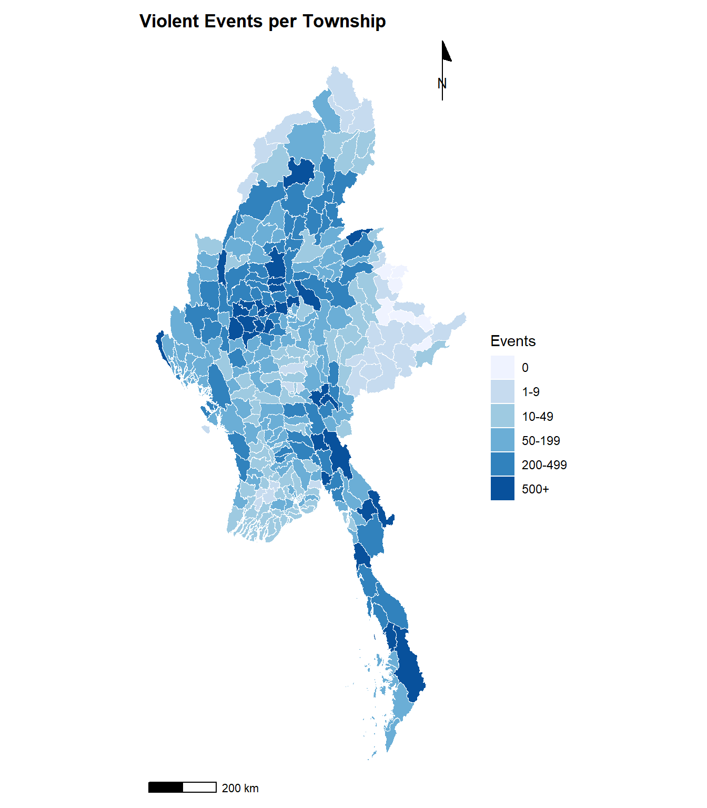
Based on the above:
Violence is widespread throughout the country. Very few townships recorded no violent events.
The highest counts (500+ events) are concentrated in the central zone (Sagaing, Magway and Mandalay), which is Bamar-majority territory where armed resistance emerged after the 2021 coup, and in a south-eastern belt running down Tanintharyi.
Other high-count areas are found in ethnic minority regions with long-running armed conflict, such as parts of Kachin, northern Shan, Rakhine and Tanintharyi. The far north of Kachin is comparatively quiet.
Few events are recorded in eastern Shan, along the borders with China, Laos and Thailand. This may reflect lower population density, areas dominated by ceasefire-era armed groups, and restricted media access, rather than an absence of violence.
These are raw counts, so populous townships will tend to record more events. The maps do not show the risk per person.
Three event types have been classified as ‘violent’ for the purpose of this study - “Battles”, “Explosions/Remote violence” and “Violence against civilians”.
mym_sum %>%
select(township, `Battles` = battles, `Explosions / remote` = explosions,
`Violence against civilians` = vaciv) %>%
pivot_longer(-c(township, geometry), names_to = "measure", values_to = "n") %>%
mutate(n_cls = cut(n, c(-Inf, 0, 4, 19, 99, Inf), c("0", "1-4", "5-19", "20-99", "100+"))) %>%
ggplot() +
geom_sf(aes(fill = n_cls), colour = NA) +
scale_fill_brewer(palette = "Blues", name = NULL, drop = FALSE) +
facet_wrap(~measure, nrow = 1) +
theme_map(9)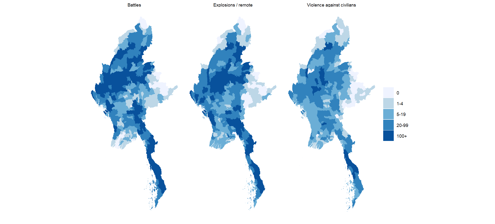
Based on the above:
The geographical spread is broadly consistent across the 3 types of events.
Violence against civilians events are less prevalent but more evenly spread, compared to Battles and Explosions / Remote violence events.
brks_f <- c(-Inf, 0, 9, 49, 199, 499, Inf)
labs_f <- c("0", "1-9", "10-49", "50-199", "200-499", "500+")
mym_sum <- mym_sum %>%
mutate(fat_cls = cut(fatalities, brks_f, labs_f))
ggplot(mym_sum) +
geom_sf(aes(fill = fat_cls), colour = "white", linewidth = .08) +
scale_fill_brewer(palette = "Reds", name = "Fatalities", drop = FALSE) +
labs(title = "Fatalities Per Township") +
theme_map()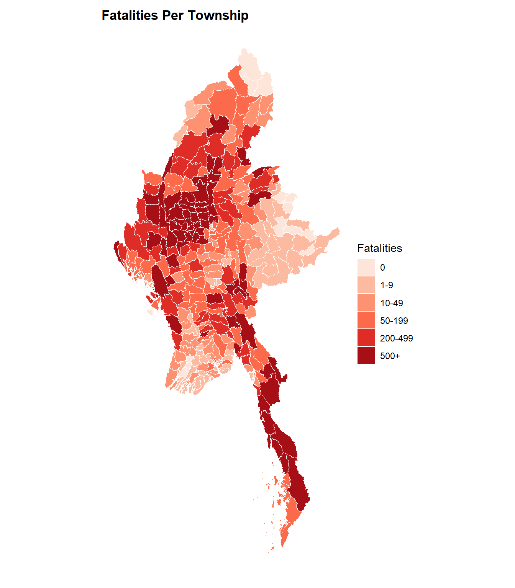
Based on the above:
Fatalities are concentrated in the central zone, where the darkest townships (> 500+) form a connected block.
A second belt of high fatalities runs down the southeast region, through the Kayin, Mon and Tanintharyi areas.
Dark townships also appear in the north (Sagaing and Kachin) and along the west coast.
The pattern closely mirrors the map of violent events (to be confirmed by Spearman’s Test)
Most townships fall in the middle classes (10 to 499), indicating that serious fatalities are widespread.
Fatalities are raw counts and not adjusted for population or township size.
Spearman’s Test
A high value of 0.94 indicates that the spatial pattern of fatalities largely mirrors the pattern of violent events.
The following graph depicts the changes in monthly count of violent events during the study period.
grid %>%
group_by(month) %>%
summarise(Battles = sum(battles), `Explosions / remote` = sum(explosions),
`Violence against civilians` = sum(vaciv)) %>%
pivot_longer(-month, names_to = "type", values_to = "events") %>%
ggplot(aes(month, events, colour = type)) +
geom_line(linewidth = .8) +
geom_vline(xintercept = as.Date("2021-02-01"), linetype = "dashed") +
scale_colour_brewer(palette = "Blues", name = NULL) +
labs(x = NULL, y = "events per month") +
theme_minimal() + theme(legend.position = "top")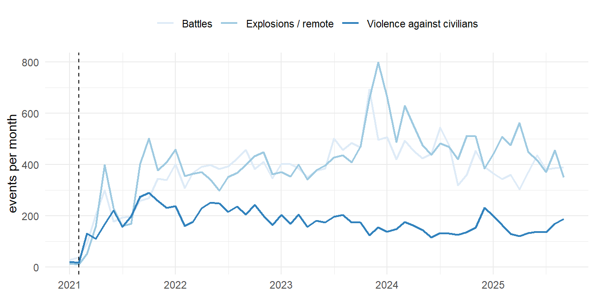
Based on the above graph:
Instances of all 3 violent event types rose sharply after the military coup in February 2021. The evolution from peaceful to armed resistance and the military increased use of firepower contributed to the large spikes in both battles and explosions/remote events, peaking in late 2023.
Numbers declined from early 2024 but remained well above pre-2021 levels.
Violence against civilians remained relatively stable and lower in count.
Operation 1027 On 27 October 2023, ethnic armed groups joined forces and launched Operation 1027, attacking junta outposts at multiple locations in northern Shan State. The military retaliated with artillery shelling and airstrikes, inflicting heavy civilian casualties and mass displacement.
A temporary ceasefire, the Haigeng Agreement, was brokered by China. However, fighting continued and fatalities count remained above pre-2021 levels.
The top 30 townships in terms of event count are shown below.
top30 <- mym_sum %>%
st_drop_geometry() %>%
slice_max(violentinc, n = 30, with_ties = FALSE) %>%
transmute(ts_pcode, label = paste0(township, " (", state_region, ")"))
grid %>%
inner_join(top30, by = "ts_pcode") %>%
mutate(label = fct_reorder(label, violentinc, .fun = sum)) %>%
ggplot(aes(month, label, fill = log1p(violentinc))) +
geom_tile(width = 31) +
scale_fill_distiller(palette = "Blues", direction = 1, name = "log(1+events)") +
labs(x = NULL, y = "Township") +
theme_minimal(base_size = 9)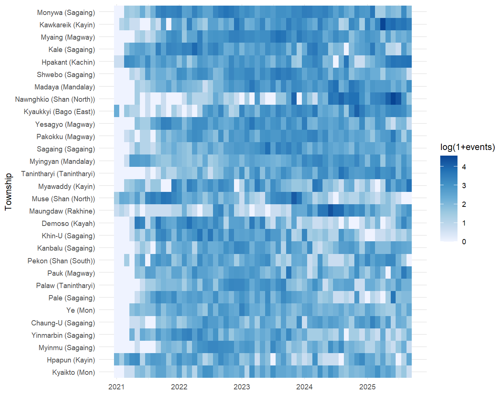
Based on the above:
Violence increased sharply from near-zero at the start of 2021 to almost all of the 30 townships by 2022.
Consistently high event count dominates in the Sagaing (Monywa, Kale, Shwebo, Sagaing, Khin-U, Kanbalu, Pale, Chaung-U, Yinmarbin and Myinmu), Magway (Myaing, Yesagyo, Pakokku, Pauk) and Mandalay (Madaya, Myingyan) regions. appear too.
Nawnghkio (northern Shan) and Maungdaw (Rakhine) started with relatively fewer violent events in the early years which increased significantly in 2024-2025.
Strategic Gateways Townships such as Hpapun (Kayin) and Demoso (Kayah) show recurring episodes of intense fighting. Both are strategically significant and heavily contested. Hpapun is a Karen National Union (KNU) stronghold near the Thai border. Demoso, the second-largest town in Kayah (Karenni) State, lies on the corridor linking resistance areas to the north and south, and is seen as a potential launching point for attacks towards Naypyitaw.
A heatmap is used to show violent events by state and region for each quarter, so trends over time can be compared across regions. The range is compressed between the least and most affected regions for visibility.
grid %>%
left_join(mym_tfm %>% st_drop_geometry() %>% distinct(ts_pcode, state_region),
by = "ts_pcode") %>%
mutate(quarter = floor_date(month, "quarter")) %>%
group_by(state_region, quarter) %>%
summarise(n = sum(violentinc), .groups = "drop") %>%
ggplot(aes(quarter, fct_reorder(state_region, n, .fun = sum), fill = log1p(n))) +
geom_tile(width = 92) +
scale_fill_distiller(palette = "Blues", direction = 1, name = "log(1+events)") +
labs(x = NULL, y = "State / Region") +
theme_minimal(base_size = 9)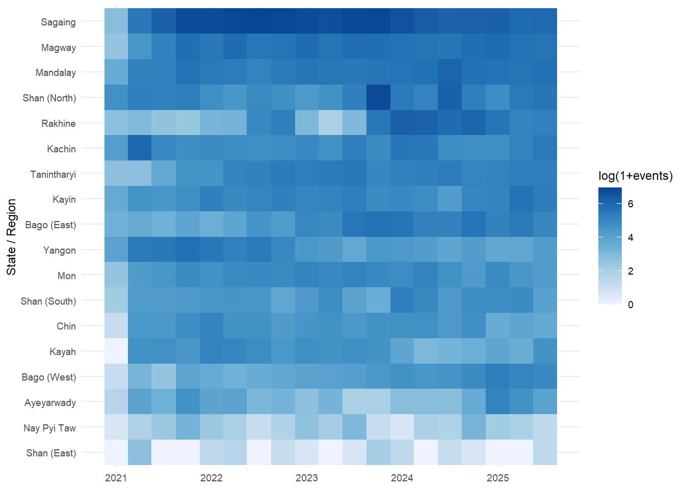
Based on the above:
# A tibble: 18 × 3
state_region violentinc pct_events
<chr> <int> <dbl>
1 Sagaing 12629 23.4
2 Magway 5389 10
3 Mandalay 4982 9.2
4 Shan (North) 4157 7.7
5 Rakhine 3231 6
6 Kachin 3142 5.8
7 Tanintharyi 3066 5.7
8 Kayin 2889 5.3
9 Bago (East) 2749 5.1
10 Yangon 2399 4.4
11 Mon 2200 4.1
12 Shan (South) 1636 3
13 Chin 1596 3
14 Kayah 1549 2.9
15 Bago (West) 1400 2.6
16 Ayeyarwady 786 1.5
17 Nay Pyi Taw 159 0.3
18 Shan (East) 41 0.1Sagaing is the epicentre the conflict during the study period (darkest blue) with the highest count recorded (12,629).
The dark cell for Shan(North) is due to Operation 1027.
The intensity of violence in Rakhine has escalated in the last few years.
Note that incident counts may be high because of the number of townships in each region and is not indicative of the rates per township.
Sagaing is the most affected region in the post-coup conflict, accounting for 23.4% of violent events recorded. Before 2021, armed conflict was concentrated in the ethnic minority borderlands. The military’s violent crackdown on protests in the largely Bamar-majority heartland led to a rapid rise in armed resistance there. The region lies between the Ayeyarwady and Chindwin rivers and stretches from the Indian border to Mandalay, which makes it important for transport and supply routes. As resistance forces held ground, the military intensified its attacks, particularly airstrikes, in what rights groups and media have described as a scorched-earth campaign.
Violence in Rakhine has intensified since the Arakan Army resumed fighting in late 2023. By late 2025, the AA controlled 14 of the Rakhine State’s 17 townships, leaving the junta holding only the coastal towns of Sittwe, Kyaukphyu and Manaung, where its regional command and naval bases are located. The military has relied on airstrikes, drones and heavy artillery to reinforce its remaining positions, together with maritime operations. It has also reportedly coordinated with Rohingya armed groups, despite the 2017 crackdown that drove hundreds of thousands of Rohingya into Bangladesh.
Townships are irregular polygons so queen contiguity and row-standardised weights are used so that spatial lag of each township is an average of its neighbours. Isolated townships without contiguous neighbours are linked to their nearest centroids.
[1] "Munaung" "Chaungzon" "Cocokyun" Min. 1st Qu. Median Mean 3rd Qu. Max.
1.000 4.000 5.000 5.236 6.000 11.000 Global Moran’s I is used to identify if clustering exists. Significance is assessed with 999 permutations.
Monte-Carlo simulation of Moran I
data: x
weights: listw
number of simulations + 1: 1000
statistic = 0.48817, observed rank = 1000, p-value <
0.00000000000000022
alternative hypothesis: two.sided
Monte-Carlo simulation of Moran I
data: x
weights: listw
number of simulations + 1: 1000
statistic = 0.66058, observed rank = 1000, p-value <
0.00000000000000022
alternative hypothesis: two.sidedGlobal Moran’s I on log-transformed counts is 0.66 (versus 0.49), indicating significant positive spatial autocorrelation. … The observed value exceeded all 999 permutation simulations (pseudo p = 0.001).
mym_w %>%
st_drop_geometry() %>%
mutate(x = log1p(violentinc),
z = as.numeric(scale(x)),
lag_z = st_lag(z, nb, wt)) %>%
ggplot(aes(z, lag_z)) +
geom_hline(yintercept = 0, linetype = "dashed") +
geom_vline(xintercept = 0, linetype = "dashed") +
geom_point(alpha = .5) +
geom_smooth(method = "lm", se = FALSE) +
labs(x = "Violent events (log, standardised)",
y = "Spatial lag (average of neighbours)") +
theme_minimal()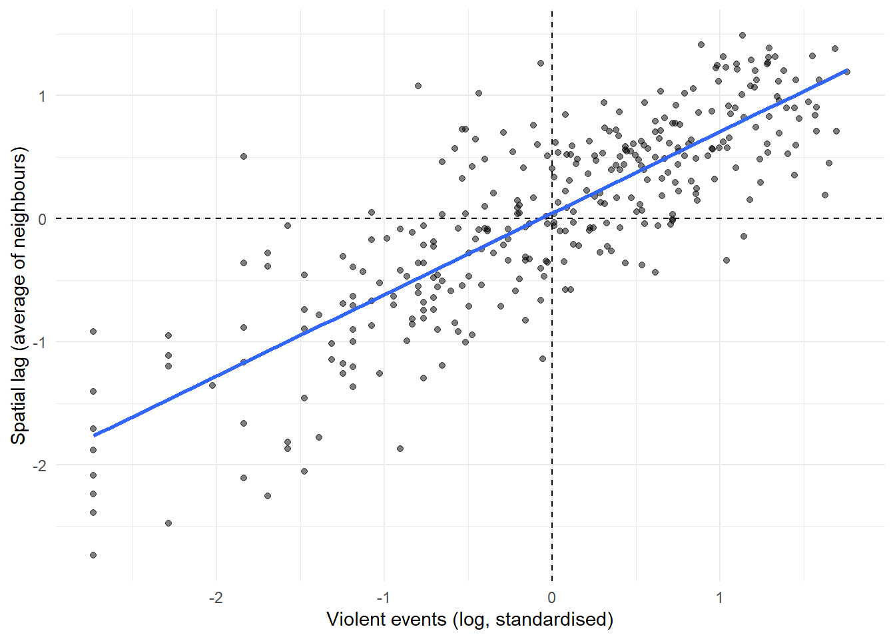
The Moran scatterplot shows a clear positive relationship between township violence and the average violence of neighbouring townships. Most townships fall in the high-high and low-low quadrants, confirming that violent townships cluster together and quiet townships cluster together.
A small number of outliers can be observed. This may reflect genuine local dynamics, such as fighting concentrated around strategic locations, or data issues such as uneven reporting coverage and events placed at low-precision locations..
Local Moran’s I identifies where clustering is concentrated by comparing each township’s log-transformed violent event count with those of its neighbours. Significance is assessed with 999 permutations. Townships with p < 0.05 are coloured by cluster type.
# A tibble: 4 × 2
cluster n
<fct> <int>
1 High-High 47
2 Low-Low 32
3 Low-High 3
4 Not significant 248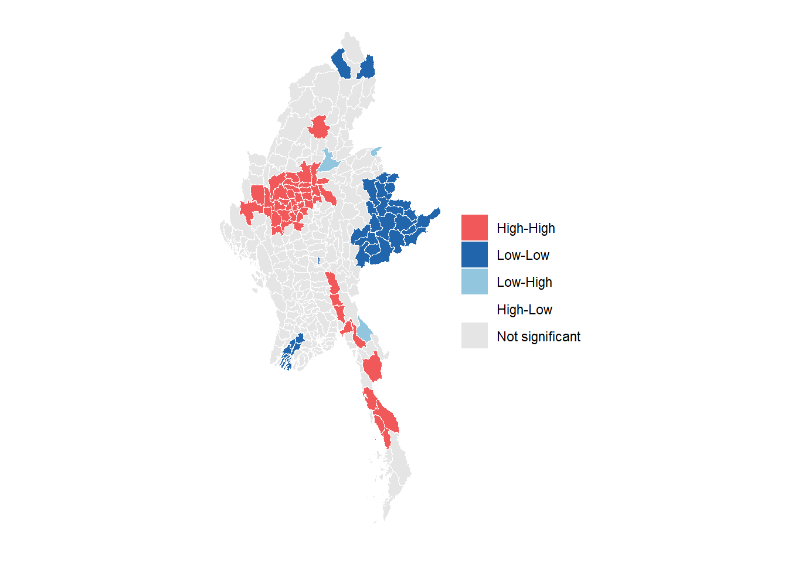
# A tibble: 3 × 4
township state_region violentinc cluster
<chr> <chr> <int> <fct>
1 Hlaingbwe Kayin 61 Low-High
2 Konkyan Shan (North) 19 Low-High
3 Mabein Shan (North) 29 Low-HighLocal Moran’s I classifies 47 townships as High-High and 32 as Low-Low. The other 248 townships (75%) show no significant local clustering. A large High-High cluster is shown in the central zone and a second High-High cluster in the southeast region. The Low-Low townships are in the low-count areas shown on the map.
There are only 3 Low-High outliers and no High-Low outliers. The absence of High-Low outliers suggests that violence rarely appears as an isolated spike: where a township is violent, its neighbours tend to be too.
This is consistent with the earlier maps and heatmaps, which showed heavy violence in the Bamar-majority centre and the southeast, including the Tanintharyi strip.
Getis-Ord Gi* is used to identify statistically significant hot and cold spots. Unlike Local Moran’s I, each township is included in its own neighbourhood. The null model is that the values are randomly arranged over the townships (conditional permutation, 999 simulations), and p < 0.05 is used without correction for multiple tests.
set.seed(1234)
gi <- mym_sum %>%
mutate(nb = include_self(nb_fix),
wt = st_weights(nb, style = "W"),
.before = 1) %>%
mutate(gi = local_gstar_perm(log1p(violentinc), nb, wt, nsim = 999), .before = 1) %>%
unnest(gi) %>%
mutate(hotcold = case_when(p_sim < 0.05 & gi_star > 0 ~ "Hot spot",
p_sim < 0.05 & gi_star < 0 ~ "Cold spot",
TRUE ~ NA_character_))
count(st_drop_geometry(gi), hotcold)# A tibble: 3 × 2
hotcold n
<chr> <int>
1 Cold spot 32
2 Hot spot 54
3 <NA> 244ggplot() +
geom_sf(data = gi, fill = "grey95", colour = "white", linewidth = .08) +
geom_sf(data = filter(gi, !is.na(hotcold)), aes(fill = hotcold),
colour = "white", linewidth = .08) +
scale_fill_manual(values = c("Hot spot" = "#f15859", "Cold spot" = "#2166ac"),
name = "Gi* (p < 0.05)") +
labs(title = "Hot and Cold Spots") +
theme_map()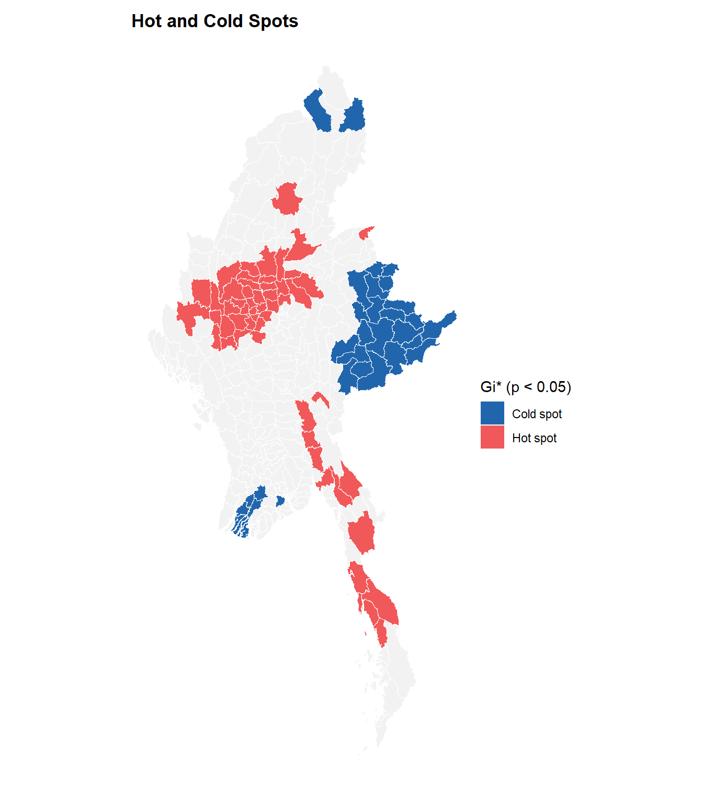
Gi* identifies 54 hot spots and 32 cold spots (p < 0.05), a total of 86 townships (26%). The numbers are close to the 47 High-High and 32 Low-Low townships from Local Moran’s I, and the pattern reinforces those results. Hot spots form a large central block and a south-eastern belt, and the cold spots sit in the low-count areas.
Gi* z-scores are calculated for every township in every month to produce the monthly hot and cold spot values used for the trend test. Gi* is a relative measure as the z-score compares a township and its neighbours with the national average for that month.
n <- nrow(mym_tfm)
nb_self <- include_self(nb_fix)
wt_self <- st_weights(nb_self, style = "W")
stopifnot(all(grid$ts_pcode[seq_len(n)] == mym_tfm$ts_pcode))
W <- Matrix::sparseMatrix(i = rep(seq_len(n), lengths(nb_self)),
j = unlist(nb_self),
x = unlist(wt_self), dims = c(n, n))
X <- matrix(grid$violentinc, nrow = n)
xbar <- colMeans(X)
s <- sqrt(colMeans(X^2) - xbar^2)
S1 <- Matrix::rowSums(W^2)
Z <- sweep(as.matrix(W %*% X), 2, xbar) /
outer(sqrt((n * S1 - 1) / (n - 1)), s)
gi_time <- tibble(ts_pcode = grid$ts_pcode,
month_id = grid$month_id,
gi_star = as.vector(Z))The Mann-Kendall test is applied to each township’s monthly Gi* series to test for a significant upward or downward trend. A false discovery rate (FDR) correction is applied because 330 tests are run.
mk <- gi_time %>%
group_by(ts_pcode) %>%
summarise(res = list(Kendall::MannKendall(gi_star)), .groups = "drop") %>%
mutate(tau = map_dbl(res, \(m) as.numeric(m$tau)),
sl = map_dbl(res, \(m) as.numeric(m$sl)),
.keep = "unused")
mk %>%
summarise(significant = sum(sl < 0.05, na.rm = TRUE),
increasing = sum(sl < 0.05 & tau > 0, na.rm = TRUE),
decreasing = sum(sl < 0.05 & tau < 0, na.rm = TRUE),
after_FDR = sum(p.adjust(sl, "fdr") < 0.05, na.rm = TRUE))# A tibble: 1 × 4
significant increasing decreasing after_FDR
<int> <int> <int> <int>
1 202 99 103 180202 of the 330 townships (61%) show a significant trend in Gi* at p < 0.05, and 180 (55%) remain significant after the FDR correction. The split between increasing (99) and decreasing (103) trends is almost even.
Gi* is standardised against the national average each month. A rising Gi* means violence is becoming relatively more intense in and around that township. A falling Gi* means it is becoming relatively less intense. The test therefore picks up shifts in where violence is concentrated and not the national rise in violence.
Monthly Gi* series are autocorrelated, which makes the Mann-Kendall p-values optimistic. The number of townships with a significant trend is likely overstated and should read as indicative.
# A tibble: 3 × 2
trend n
<fct> <int>
1 Increasing 87
2 Decreasing 93
3 No significant trend 150mym_tfm %>%
left_join(mk, by = "ts_pcode") %>%
ggplot() +
geom_sf(aes(fill = trend), colour = "white", linewidth = .08) +
scale_fill_manual(values = c("Increasing" = "#f15859", "Decreasing" = "#2166ac",
"No significant trend" = "grey90"),
name = "Trend in Gi*") +
annotation_scale(location = "bl") +
annotation_north_arrow(location = "tr", style = north_arrow_minimal) +
labs(title = "Where Is Violence Becoming Relatively More or Less Intense?") +
theme_map()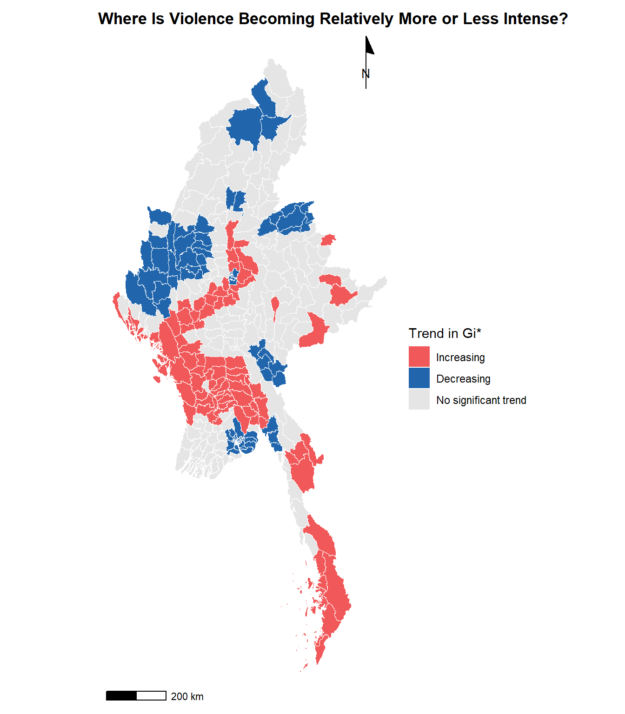
Emerging hot spot analysis (EHSA) classifies each township’s hot or cold spot pattern over time.
emerging_hotspot_analysis() calculates Gi* for every township in every month, using each township and its neighbours in the current and previous month (k = 1 time lag). Significance is tested against a null model of random arrangement by permutation (nsim = 99, so the smallest possible p-value is 0.01).
A Mann-Kendall test on the Gi* series then gives the trend, and the township is classed using the share of months that are hot or cold spots. A persistent hot spot must be a hot spot in at least 90% of the 57 months. As violence was close to zero in early 2021, the classes understate how stable the hot spots are.
Gi* is calculated relative to the national mean each month, so the EHSA trends describe changes in a township’s relative intensity, not its event count.
The Mann-Kendall test also assumes independent observations, but consecutive monthly values are autocorrelated. This renders the p-values optimistic, so the number of townships with a significant trend is possibly overstated.
# A tibble: 7 × 2
classification n
<chr> <int>
1 sporadic coldspot 156
2 no pattern detected 107
3 sporadic hotspot 44
4 oscilating hotspot 14
5 oscilating coldspot 4
6 persistent coldspot 4
7 consecutive hotspot 1Few townships show a stable pattern. Of the 330 townships, 107 show no pattern and 156 are sporadic cold spots. 59 are hot spots of some kind: 44 sporadic (on-off), 14 oscillating (hot-cold) and 1 consecutive. The 15 oscillating and consecutive hot spots are hot in the final month, so these are where violence is relatively most intense by September 2025. No township is a persistent, intensifying, new or diminishing hot spot.
The EHSA classes are joined to the township polygons. All townships with a pattern are retained.
A bar chart counts the townships in each EHSA class.
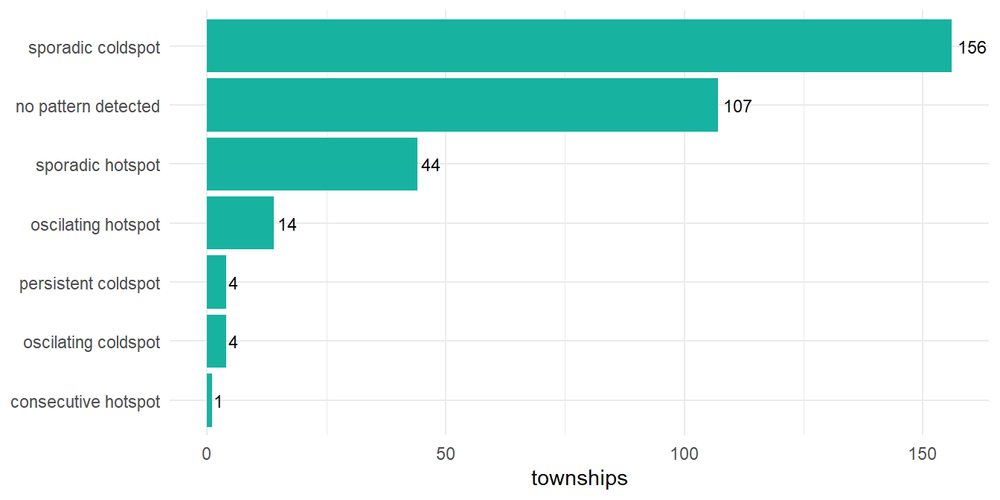
The map shows where each EHSA class occurs. Townships with no pattern are shown in grey. The package spells the class “oscilating”, so both spellings are given in the colour table.
ehsa_cols <- c(
"new hotspot" = "#ff7f00", "consecutive hotspot" = "#f15859", "intensifying hotspot" = "#a50f15",
"persistent hotspot" = "#de2d26", "diminishing hotspot" = "#fcae91", "sporadic hotspot" = "#fb9a99",
"oscilating hotspot" = "#fdd0a2", "oscillating hotspot" = "#fdd0a2", "historical hotspot" = "#bcbddc",
"new coldspot" = "#9ecae1", "persistent coldspot" = "#3182bd", "intensifying coldspot" = "#08519c",
"diminishing coldspot" = "#c6dbef", "sporadic coldspot" = "#deebf7",
"oscilating coldspot" = "#4292c6", "oscillating coldspot" = "#4292c6",
"historical coldspot" = "#bdbdbd", "consecutive coldspot" = "#6baed6")
ggplot() +
geom_sf(data = mym_ehsa, fill = "grey95", colour = "white", linewidth = .08) +
geom_sf(data = filter(mym_ehsa, !is.na(ehsa_class)), aes(fill = ehsa_class),
colour = "white", linewidth = .08) +
scale_fill_manual(values = ehsa_cols, name = "EHSA class", drop = TRUE) +
annotation_scale(location = "bl") +
annotation_north_arrow(location = "tr", style = north_arrow_minimal) +
labs(title = "How Is Violence Changing?") +
theme_map()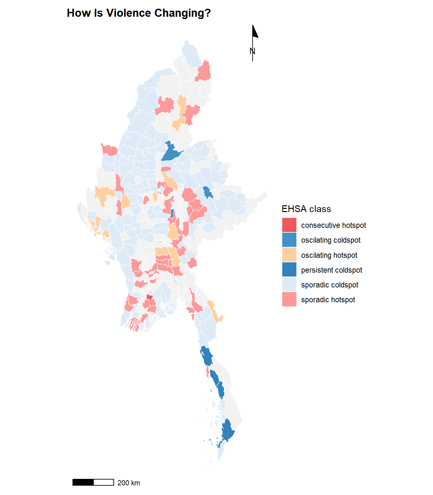
Line plots show the Gi* values through time for the six townships with the strongest significant trends (tau in brackets).
# A tibble: 6 × 4
township state_region tau sl
<chr> <chr> <dbl> <dbl>
1 Mahaaungmyay Mandalay -0.612 1.92e-11
2 Minhla Bago (West) 0.605 0
3 Chanmyathazi Mandalay -0.593 7.76e-11
4 Natogyi Mandalay 0.586 0
5 Okpho Bago (West) 0.581 0
6 Chauk Magway 0.579 0 gi_time %>%
inner_join(pick, by = "ts_pcode") %>%
left_join(distinct(grid, month_id, month), by = "month_id") %>%
ggplot(aes(month, gi_star)) +
geom_hline(yintercept = c(-1.96, 1.96), linetype = "dashed", colour = "grey50") +
geom_line(colour = "#f15859") +
geom_smooth(method = "loess", se = FALSE, colour = "black", linewidth = .5) +
facet_wrap(~label, ncol = 3) +
labs(x = NULL, y = "Gi* (z-score)") +
theme_minimal(base_size = 9)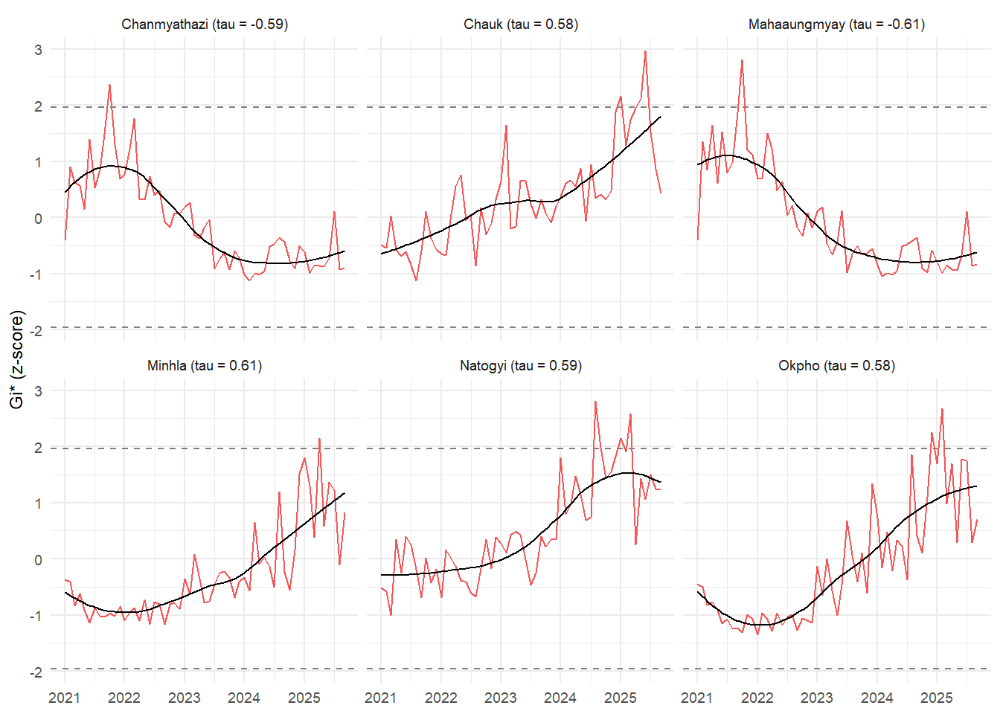
Townships are classified as hot spots, cold spots or not significant using Gi* (p < 0.05, 999 permutations, log-transformed counts).
nb_self <- include_self(nb_fix)
wt_self <- st_weights(nb_self, style = "W")
gi_hot <- function(x, nb = nb_self, wt = wt_self, nsim = 999) {
set.seed(1234)
g <- local_gstar_perm(log1p(x), nb, wt, nsim = nsim)
case_when(g$p_sim < 0.05 & g$gi_star > 0 ~ "Hot spot",
g$p_sim < 0.05 & g$gi_star < 0 ~ "Cold spot",
TRUE ~ "Not significant")
}
gi_cols <- c("Hot spot" = "#f15859", "Cold spot" = "#2166ac", "Not significant" = "grey90")Hot and cold spots are mapped separately for battles, explosions/remote violence (which includes air and drone strikes) and violence against civilians.
type_lv <- c("Battles", "Explosions / remote", "Violence against civilians")
type_tot <- grid %>%
group_by(ts_pcode) %>%
summarise(Battles = sum(battles),
`Explosions / remote` = sum(explosions),
`Violence against civilians` = sum(vaciv), .groups = "drop")
by_type <- mym_tfm %>%
select(ts_pcode) %>%
left_join(type_tot, by = "ts_pcode") %>%
mutate(across(all_of(type_lv), gi_hot)) %>%
pivot_longer(all_of(type_lv), names_to = "measure", values_to = "class") %>%
mutate(measure = factor(measure, levels = type_lv),
class = factor(class, levels = names(gi_cols)))
by_type %>% st_drop_geometry() %>% count(measure, class)# A tibble: 9 × 3
measure class n
<fct> <fct> <int>
1 Battles Hot spot 70
2 Battles Cold spot 61
3 Battles Not significant 199
4 Explosions / remote Hot spot 44
5 Explosions / remote Cold spot 37
6 Explosions / remote Not significant 249
7 Violence against civilians Hot spot 42
8 Violence against civilians Cold spot 31
9 Violence against civilians Not significant 257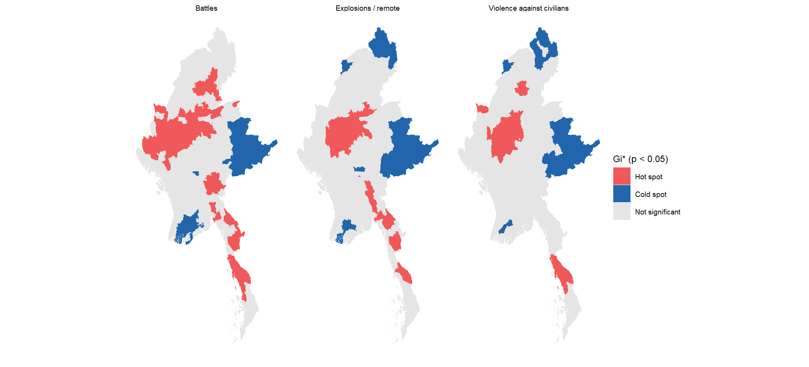
Battles have the most hot spots (70 townships), followed by explosions/remote violence (44) and violence against civilians (42). The number of cold spots follows the same order (61, 37 and 31).
Ground fighting is therefore the most spatially clustered type of violence. Fewer townships show significant clustering of remote or civilian-targeted violence. The overall hot spot pattern is not driven by a single event type.
Hot and cold spots are compared before and after the start of Operation 1027 in October 2023 to show how the geography of violence changed between the two phases of the study period. The operation began on 27 October 2023, so October 2023 is included in the earlier phase.
cut_month <- as.Date("2023-11-01")
p_lab <- c("Before Operation 1027 (Jan 2021 - Oct 2023)",
"After Operation 1027 (Nov 2023 - Sep 2025)")
phase_tot <- grid %>%
mutate(phase = if_else(month < cut_month, p_lab[1], p_lab[2])) %>%
group_by(phase, ts_pcode) %>%
summarise(n = sum(violentinc), .groups = "drop") %>%
arrange(phase, match(ts_pcode, mym_tfm$ts_pcode)) %>%
group_by(phase) %>%
mutate(class = factor(gi_hot(n), levels = names(gi_cols)),
phase = factor(phase, levels = p_lab)) %>%
ungroup()
phase_tot %>% count(phase, class)# A tibble: 6 × 3
phase class n
<fct> <fct> <int>
1 Before Operation 1027 (Jan 2021 - Oct 2023) Hot spot 53
2 Before Operation 1027 (Jan 2021 - Oct 2023) Cold spot 37
3 Before Operation 1027 (Jan 2021 - Oct 2023) Not significant 240
4 After Operation 1027 (Nov 2023 - Sep 2025) Hot spot 51
5 After Operation 1027 (Nov 2023 - Sep 2025) Cold spot 50
6 After Operation 1027 (Nov 2023 - Sep 2025) Not significant 229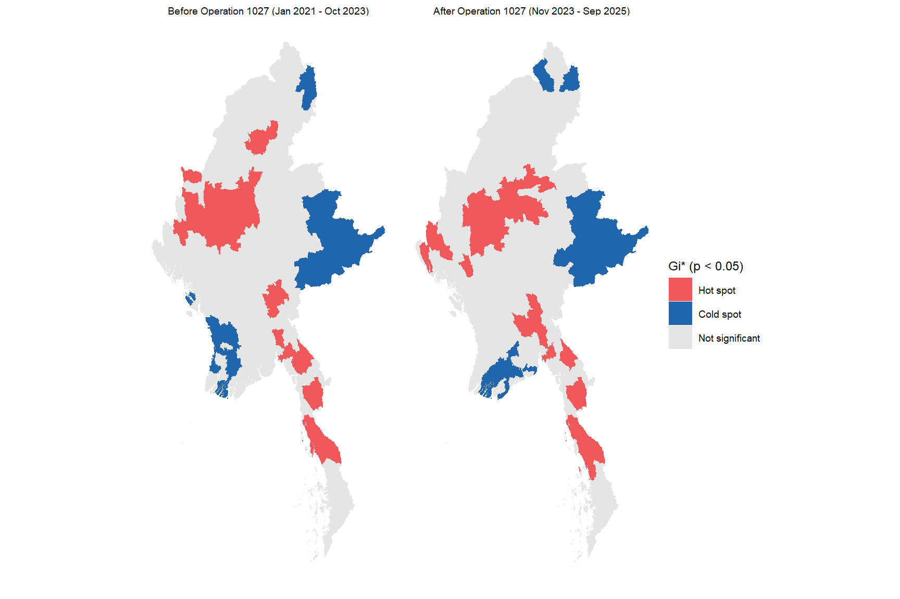
The number of hot spots is almost unchanged (53 before and 51 after), but cold spots rise from 37 to 50. The table below shows how many townships keep, gain or lose hot spot status, which shows whether the change is in where the hot spots are rather than how many there are.
# A tibble: 7 × 3
before after n
<fct> <fct> <int>
1 Hot spot Hot spot 36
2 Hot spot Not significant 17
3 Cold spot Cold spot 24
4 Cold spot Not significant 13
5 Not significant Hot spot 15
6 Not significant Cold spot 26
7 Not significant Not significant 19936 of the 53 townships that were hot spots before Operation 1027 and remain hot spots afterwards. 15 townships became hot spots after it. The change is therefore mainly in where the hot spots are, not in how many there are.
Event counts are not adjusted for population or area, so populous townships tend to record more events. Population-adjusted or area-adjusted rates would give deeper insights.
When an event is reported to have caused deaths but the number is unknown, ACLED codes the fatalities as 3 or uses the lowest credible reported figure it receives. This conservative approach means fatalities are likely to be understated than the true toll.
Access to many conflict areas is restricted. Low counts may reflect under-reporting rather than less violence. More recent data may be incomplete because of reporting delays.
Gi* and EHSA are relative to the national average each month, so they show shifts in where violence is concentrated, not changes in its overall volume.
Monthly series are autocorrelated, which makes the trend p-values optimistic.